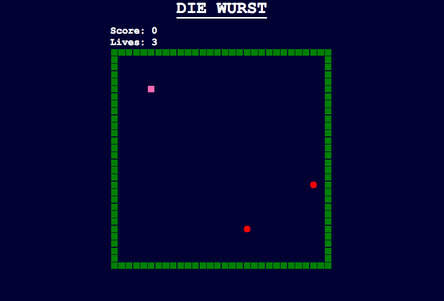
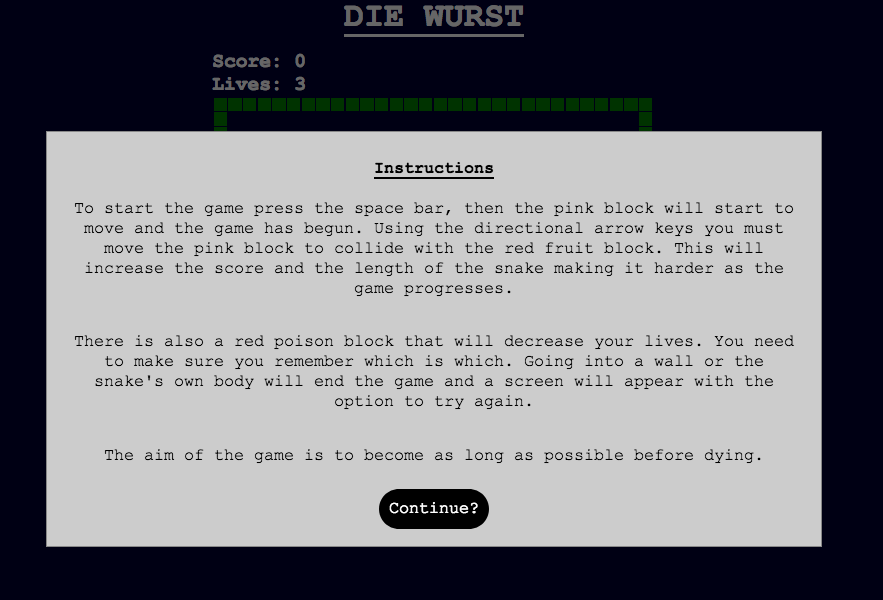
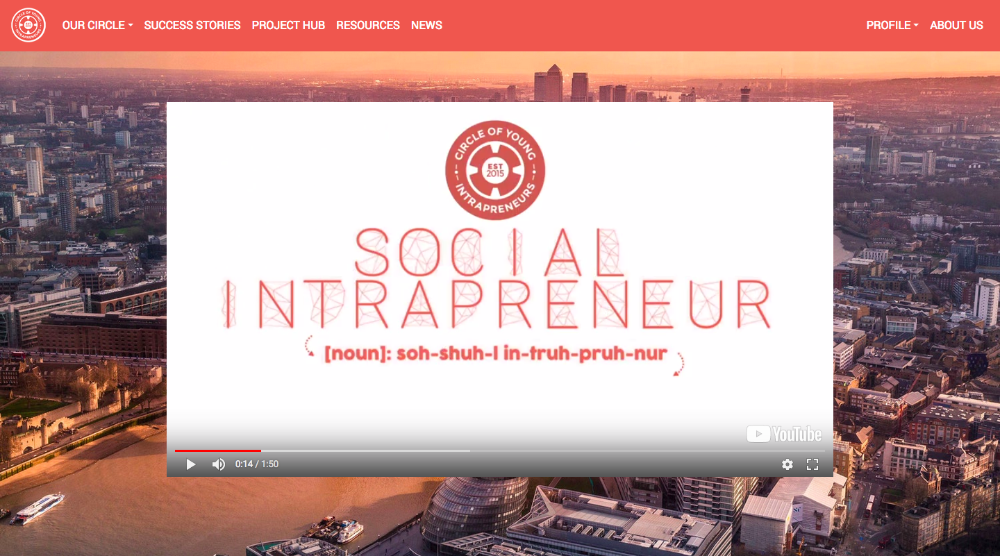

Projects
Project 1
JAVASCRIPT GAME PROJECT - SNAKE
 Sophie was challenged to create and develop a full game using JavaScript, HTML5 (without canvas), and CSS3. The game Sophie produced was a replica version of Nokia’s Snake from 1997. The project was spread over a week and split into 2 sprints. The objective of sprint 1 was to have a functional game that was playable by a user. She overestimated how long this would take and so had to add extra features to the original game later on. The objective of sprint 2 was to add styling to the game and ensure the code was dry and well written. As mentioned, extra features such as lives and poison in sprint 2 as the game scope was too small and got completed quickly.
The whole project was a success and all goals set out at the start were achieved. The game was presented in front of the academy once sprint 2 was over.
Project 2
FULL STACK WEB DEVELOPMENT – CIRCLE OF YOUNG INTRAPRENEURS
This was the first group project that the class were involved in. The week was split into 2 sprints, with Sophie being one of the scrum masters for the first. This involved organising her own scrum team to do the tasks allocated to that group. The group were given a variety of user stories, prioritised using MoSCoW, that were separated into the 4 scrum teams. The MUST user stories were put in sprint 1 and the SHOULD/COULD user stories were put into sprint 2.
During the first sprint, the group were tasked to create a fully functional website that someone could navigate through. Sophie’s objective was to create the site map given to the group in the starting documentation. This involved using front-end and back-end development to make sure the web pages were laid out correctly and able to be linked where needed.
During the second sprint the scrum masters were changed over within the teams. Sophie was then more involved with front-end development to remove all inconsistency throughout the web pages so the overall look was simple and professional.
Tools used: HTML5, CSS3, Bootstrap 4.1, JavaScript, Ruby on Rails, Devise, Pundit, PostgreSQL and Git.